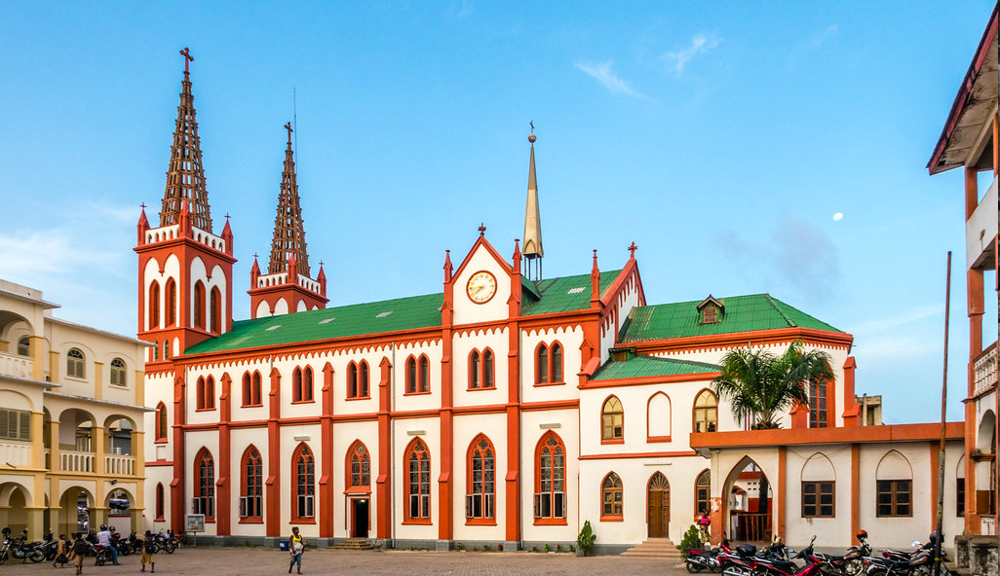
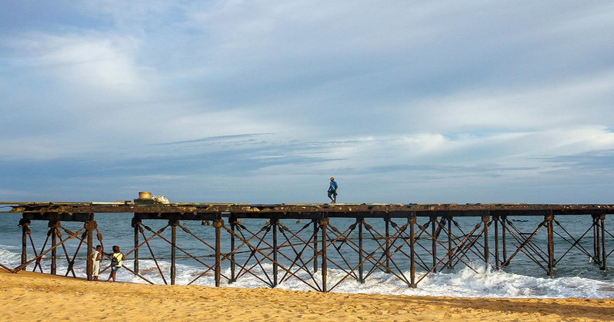

Le Monumentdes martyrs

Le Monument de l'indépendance
1-Monument de l’indépendance
La première chose que tout le mode souhaite visiter dès son arrivée à Lomé
c’est bien sûr le monument de l’indépendance, ce symbole d’accession à
la souveraineté du peuple togolais depuis plus de 60ans !

la Cathégralde lomé
3-La Cathédrale Sacré-Cœur La cathédrale du Sacré-Cœur de Lomé est l’église-mère de l’archidiocèse de Lomé. Érigée entre 1901 et 1902 par les autorités coloniales allemandes, la cathédrale fait partie des édifices emblématiques de la nouvelle capitale togolaise depuis plus de 100 ans déjà. 📍Cathédrale de Lomé, Grand marché de Lomé

le wharf de lomé